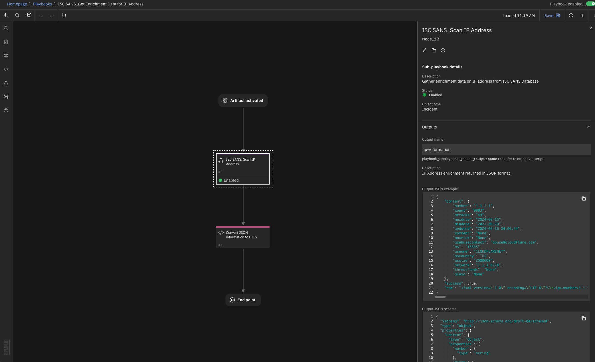
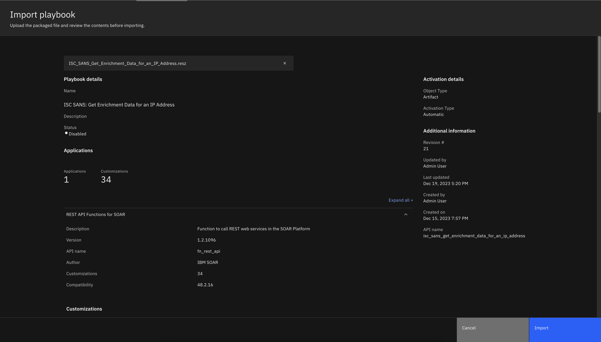
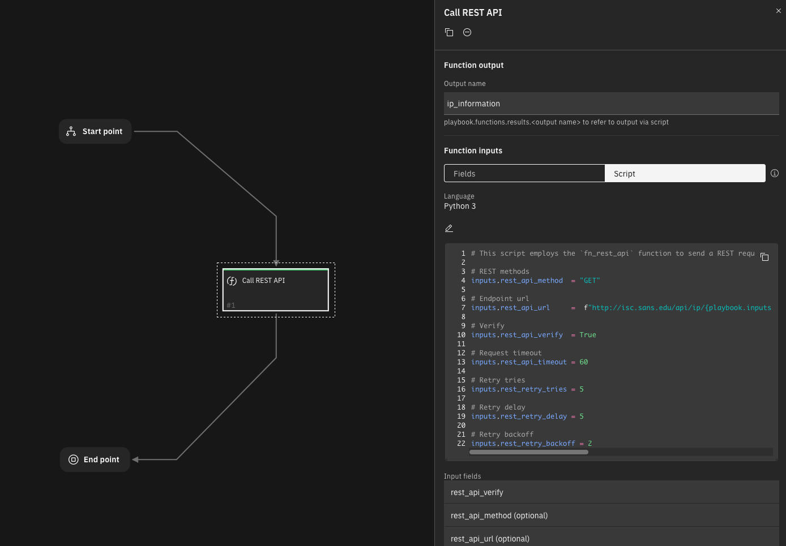

ISC SANS¶
Release Notes¶
Version |
Date |
Notes |
|---|---|---|
1.0.0 |
12/2023 |
Added a playbook that retrieves enrichment data for IP addresses |
Overview¶
Automatically retrieve enrichment data for IP addresses from ISC SANS database.

Requirements¶
This app supports the IBM Security QRadar SOAR Platform and the IBM Security QRadar SOAR for IBM Cloud Pak for Security.
Export Description¶
Minimum SOAR version required for this export: 49.0 (NOTE: this may be higher than each app’s minimum required version).
Apps Included with Export¶
App |
Version |
Minimum SOAR Version |
|---|---|---|
REST API Functions for SOAR |
1.2.0 |
49.0 |
SOAR platform¶
The SOAR platform supports two app deployment mechanisms, Edge Gateway (formerly App Host) and integration server.
If deploying to a SOAR platform with an Edge Gateway, the requirements are:
SOAR platform >=
49.0.The app is in a container-based format (available from the AppExchange as a
zipfile).
If deploying to a SOAR platform with an integration server, the requirements are:
SOAR platform >=
49.0.The app is in the older integration format (available from the AppExchange as a
zipfile which contains atar.gzfile).The application requires
resilient-circuitsversion51.0.If using an API key account, make sure the account provides the following minimum permissions:
Name
Permissions
Org Data
Read
Function
Read
The following SOAR platform guides provide additional information:
Edge Gateway Deployment Guide or App Host Deployment Guide: provides installation, configuration, and troubleshooting information, including proxy server settings.
Integration Server Guide: provides installation, configuration, and troubleshooting information, including proxy server settings.
System Administrator Guide: provides the procedure to install, configure and deploy apps.
The above guides are available on the IBM Documentation website at ibm.biz/soar-docs. On this web page, select your SOAR platform version. On the follow-on page, you can find the Edge Gateway Deployment Guide, App Host Deployment Guide, or Integration Server Guide by expanding Apps in the Table of Contents pane. The System Administrator Guide is available by expanding System Administrator.
Cloud Pak for Security¶
If you are deploying to IBM Cloud Pak for Security, the requirements are:
IBM Cloud Pak for Security >=
1.10.Cloud Pak is configured with an Edge Gateway.
The app is in a container-based format (available from the AppExchange as a
zipfile).
The following Cloud Pak guides provide additional information:
Edge Gateway Deployment Guide or App Host Deployment Guide: provides installation, configuration, and troubleshooting information, including proxy server settings. From the Table of Contents, select Case Management and Orchestration & Automation > Orchestration and Automation Apps.
System Administrator Guide: provides information to install, configure, and deploy apps. From the IBM Cloud Pak for Security IBM Documentation table of contents, select Case Management and Orchestration & Automation > System administrator.
These guides are available on the IBM Documentation website at ibm.biz/cp4s-docs. From this web page, select your IBM Cloud Pak for Security version. From the version-specific IBM Documentation page, select Case Management and Orchestration & Automation.
Proxy Server¶
The app does support a proxy server.
Python Environment¶
Python 3.6 and Python 3.9 are supported. Additional package dependencies may exist for each of these packages:
resilient-circuits>=51.0
PyJWT
Installation¶

Unzip the file downloaded from IBM AppExchange (
ISC_SANS_Get_Enrichment_Data_for_an_IP_Address.zip)Upload it’s contents to QRadar SOAR using the
Import Playbooksfunctionality.This should automatically install the playbook, sub-playbooks and associated
REST API Functions for SOARapplication required for proper execution.
Function - Call REST API¶
This function calls a REST web service. It supports the standard REST methods: GET, HEAD, POST, PUT, DELETE, PATCH and OPTIONS.
The function parameters determine the type of call, the URL, and optionally the headers and body. The results include the text or structured (JSON) result from the web service, and additional information including the elapsed time.

Inputs:
Name |
Type |
Required |
Example |
Tooltip |
|---|---|---|---|---|
|
|
No |
|
- |
|
|
No |
|
- |
|
|
No |
|
- |
|
|
No |
|
- |
|
|
Yes |
|
Verify SSL certificate |
|
|
No |
|
Multiplier applied to delay between attempts. Default: |
|
|
No |
|
Initial delay between attempts. Default: |
|
|
No |
|
The maximum number of attempts. Default: |
Outputs:
NOTE: This example might be in JSON format, but
resultsis a Python Dictionary on the SOAR platform.
{
"content": {
"number": "1.1.1.1",
"count": "9903",
"attacks": "49",
"maxdate": "2024-02-15",
"mindate": "2021-09-29",
"updated": "2024-02-16 04:06:44",
"comment": "None",
"maxrisk": "None",
"asabusecontact": "abuse@cloudflare.com",
"as": "13335",
"asname": "CLOUDFLARENET",
"ascountry": "US",
"assize": "2500608",
"network": "1.1.1.0/24",
"threatfeeds": "None",
"alexa": "None"
},
"success": true,
"raw": "<?xml version=\"1.0\" encoding=\"UTF-8\"?>\n<ip><number>1.1.1.1</number><count>9903</count><attacks>49</attacks><maxdate>2024-02-15</maxdate><mindate>2021-09-29</mindate><updated>2024-02-16 04:06:44</updated><comment></comment><maxrisk></maxrisk><asabusecontact>abuse@cloudflare.com</asabusecontact><as>13335</as><asname>CLOUDFLARENET</asname><ascountry>US</ascountry><assize>2500608</assize><network>1.1.1.0/24</network><threatfeeds><mastodon><lastseen>2024-02-16</lastseen><firstseen>2023-07-13</firstseen></mastodon><openresolver><lastseen>2024-02-15</lastseen><firstseen>2022-02-04</firstseen></openresolver></threatfeeds><alexa><lastrank>4585</lastrank><domains>2</domains><firstseen>2015-12-29</firstseen><lastseen>2015-12-29</lastseen><hostname>null.scientificamerican.com</hostname></alexa></ip>"
}
Example Function Input Script:
# This script employs the `fn_rest_api` function to send a REST request to the SANS endpoint, using the value from the artifact if the artifact is an IP address.
# REST methods
inputs.rest_api_method = "GET"
# Endpoint url
inputs.rest_api_url = f"http://isc.sans.edu/api/ip/{playbook.inputs.ip_address}"
# Verify
inputs.rest_api_verify = True
# Request timeout
inputs.rest_api_timeout = 60
# Retry tries
inputs.rest_retry_tries = 5
# Retry delay
inputs.rest_retry_delay = 5
# Retry backoff
inputs.rest_retry_backoff = 2
Example Function Endpoint Script:
import xml.etree.ElementTree as ET
IP_INFO_UNAVAILABLE_TEMPLATE = {
"as" : '0',
"assize" : '0',
"count" : "None",
"attacks" : "None",
"maxdate" : "None",
"mindate" : "None",
"updated" : "None",
"comment" : "None",
"maxrisk" : "None",
"network" : "None",
"asname" : "not routed",
"ascountry" : "XX",
"asabusecontact" : "None"}
json_intel, success = {}, True
# Converting response to a XML Tree
raw_response = playbook.functions.results.ip_information.content.text
# Converting response from XML to JSON
for each_tag in ET.fromstring(raw_response):
# Skipping process if the number tag has no value
if each_tag.tag == "number" and not each_tag.text:
success = False
break
# Certain tags tend to have nested values, these are flattened and added to `json_intel`
if each_tag.tag in ["threatfeed", "ssh", "weblogs"]:
json_intel = {}
for sub_tag in each_tag:
json_intel[f"{each_tag.tag} {sub_tag.tag}"] = sub_tag.text
# Otherwise tag and it's value is directly added
else:
json_intel[each_tag.tag] = str(each_tag.text)
if success:
success = False
for key in IP_INFO_UNAVAILABLE_TEMPLATE:
if json_intel[key] != IP_INFO_UNAVAILABLE_TEMPLATE[key]:
success = True
break
playbook.results = {
"content" : json_intel,
"success" : success,
"raw" : raw_response
}
Script - Convert JSON information to HITS¶
Script to process the endpoint response and add the result as HITS
Object: artifact
Script Text:
import xml.etree.ElementTree as ET
def compile_section_by_dtype(value, name):
"""
Complies received information into HIT Cards. The information can have varied datatype. This function
automatically detects the data type and formats the information suitable for a SOAR artifact. The result
is returned as a dictionary representing the subsection with its name, data type, and converted
value (if applicable).
Args:
----
value (str): The value to be categorized into a specific data type.
name (str): The name or identifier for the subsection.
Returns:
-------
dict: A dictionary representing the subsection with the following keys:
- "name" : The name or identifier passed as the 'name' parameter.
- "type" : The determined data type of the 'value' (either "string," "uri," or "number").
- "value" : The 'value' converted to the appropriate data type (int for numbers).
"""
info_type = "string"
# if "http" found, the string is classified as an URL
if "http" in value:
info_type = "uri"
# detects if the given string is a number
elif value.isdigit():
info_type = "number"
value = int(value)
# format required for a HIT card to compile within an artifact
subsection = {
"name" : name,
"type" : info_type,
"value" : value
}
return subsection
def dedup_section(section):
"""
An HIT card exclusively accommodates distinct entries and cannot exhibit information in a nested
structure. Consequently, data is condensed and organized within the HIT card. To prevent
redundancies, this function is employed to attach an index number to the names of recurring
entries, ensuring their uniqueness
Args:
----
section (dict): The section to be de-duplicated
Returns:
-------
dict : Similar dictionary with de-duplicated "name" value
"""
unique_keys = {}
for idx, each_item in enumerate(section):
if each_item["name"] not in unique_keys:
unique_keys[each_item["name"]] = 0
else:
unique_keys[each_item["name"]] += 1
section[idx]["name"] = section[idx]["name"] + str(unique_keys[each_item["name"]])
return section
def create_hits(success, response):
"""
Wrapper function that creates a HIT. Dpendin on the result being returned from the sub-playbook
this function uses `dedup_section` and `compile_section_by_dtype` functions to format the json results
in the format required for HIT creation
Args:
-----
success (bool): Valid response returned
response (dict): Response returned from the sub-playbook
Returns:
-------
None
"""
intel = []
if success:
for attribute in response:
intel.append(compile_section_by_dtype(response[attribute], attribute))
artifact.addHit("ISC SANS IP Information:", dedup_section(intel))
create_hits(playbook.subplaybooks.results.ip_information.success, playbook.subplaybooks.results.ip_information.content)
Playbooks¶
Playbook Name |
Description |
Activation Type |
Object |
Status |
Condition |
Revision |
|---|---|---|---|---|---|---|
ISC SANS: Get Enrichment Data for IP Address |
Perform an IP address scan and gather all associated data from the Internet Storm Center database. |
Automatic |
artifact |
|
|
#55 |
ISC SANS: Scan IP Address |
Gather enrichment data on IP address from ISC SANS Database |
Sub-playbook |
incident |
|
|
#39 |
For Support¶
This is a IBM Community provided app. Please search the Community ibm.biz/soarcommunity for assistance.